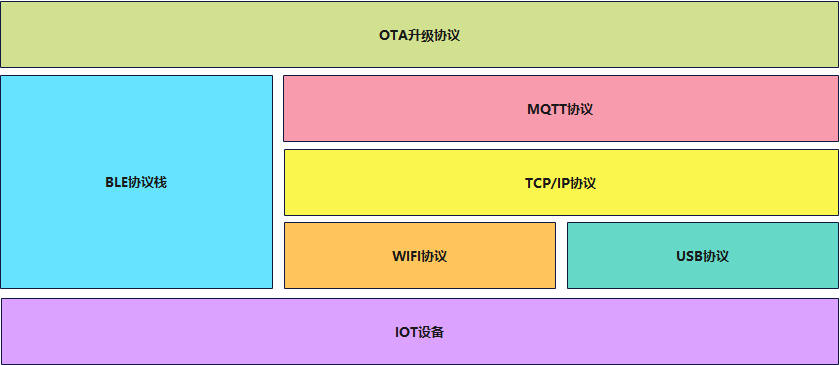
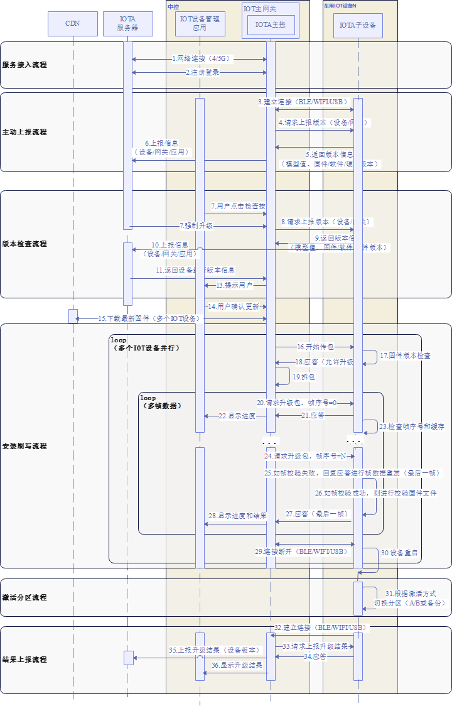
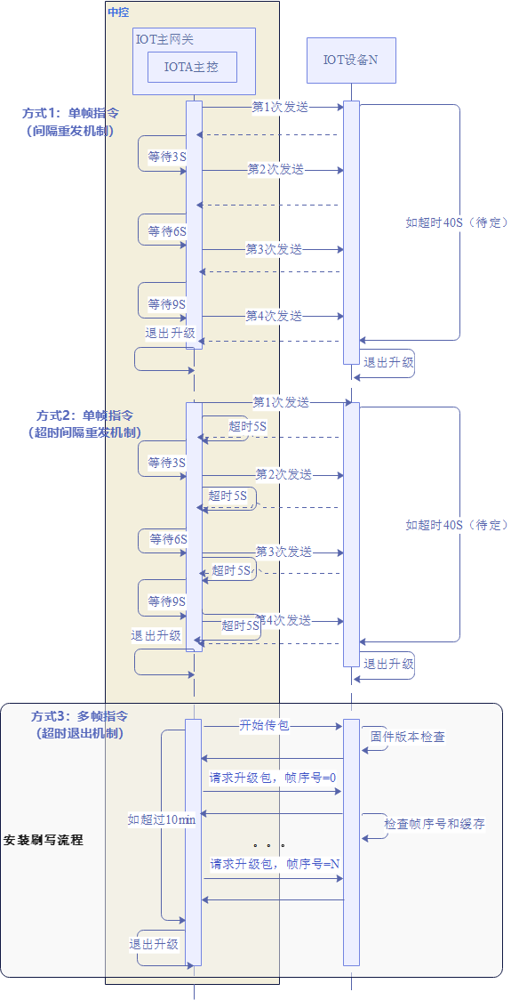
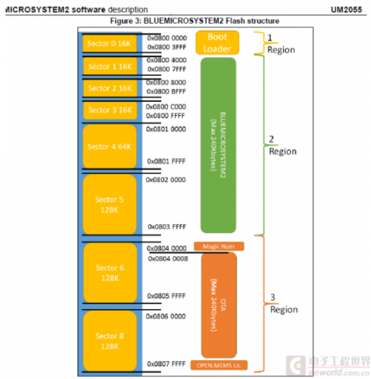
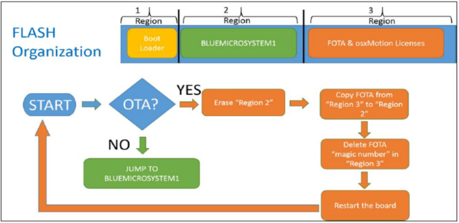
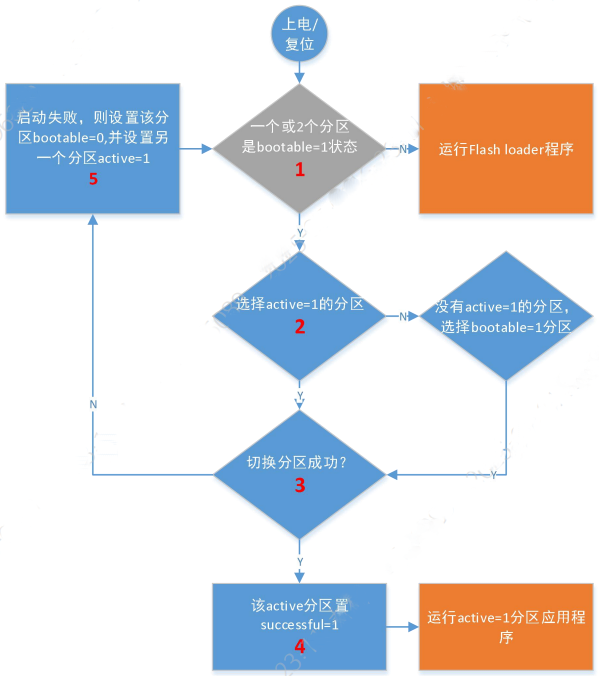
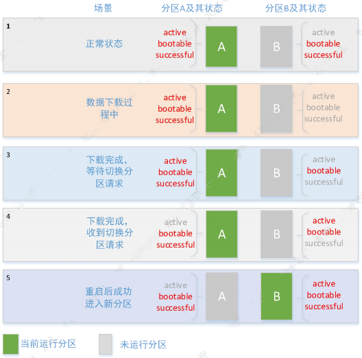
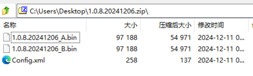

1. 通信协议栈

图 1-1 通信协议栈
2. 帧数据结构
图 2-1 帧数据结构
各字段的要求和描述如下表所示：
| 字段名 | 类型 | 描述和要求 |
|---|---|---|
| 起始标识 | WORD | 起始标识，固定为0xFEFE。 |
| 版本号 | BYTE | 高四位预留；低四位表示协议版本号，当前为1。 |
| 消息码 | BYTE | 消息码的定义为：l 0x00-0x10：预留消息码，暂未使用。l 0x11：开始传包。l 0x12：发送数据。l 0x13：上报升级结果。l 0x14-0x7F：预留消息码，暂未使用。 |
| 校验码 | WORD | 从起始标识到数据区的最后一个字节的CRC16校验值，计算前先把校验码字段置为0，计算完成后把结果写到校验码字段。 |
| 数据区长度 | WORD | 数据区的长度。 |
| 数据区 | BYTE[n] | 可变长度，具体由各个指令定义，可参考下面介绍的各个指令对应的请求消息和应答消息定义。 |
表 2-1 帧数据结构定义
3. 消息指令
3.1. 开始传包
请求描述：
| 数据方向 | IOTA主控->IOT主从网关->IOT设备 |
|---|---|
| 起始标识 | 0xFEFE |
| 版本号 | 0x01 |
| 消息码 | 0x11 |
| 校验码 | CRC16计算 |
| 数据区长度 | 0x0016 |
| 数据区 | 目的版本号（16个字节）：由ASCII字符组成，位数不足时后补0 |
| 数据帧最大长度（2个字节）：固件包拆包后每帧数据最大长度。备注：l IOTA主控根据IOT设备定义（参考硬件及升级包大小）的MUT进行自适应动态填充；l 数据帧最大长度应小于IOT设备的MTU和主从网关的MTU（当前为512个字节）。 | |
| 总帧数（2个字节）：固件包拆包后的数据帧总数 | |
| 检验码（2个字节）：用户上传升级包时，需在固件包描述文件里填写校验码 | |
表 3-1 开始传包的请求消息
返回描述：
| 数据方向 | IOT设备->IOT主从网关->IOTA主控 |
|---|---|
| 起始标识 | 0xFEFE |
| 版本号 | 0x01 |
| 消息码 | 0x11 |
| 校验码 | CRC16计算 |
| 数据区长度 | 0x0001 |
| 数据区 | 结果码（1个字节）：参考4.3章节定义 |
表 3-2 开始传包的返回消息
3.2. 发送数据
请求描述：
| 数据方向 | IOTA主控->IOT主从网关->IOT设备 |
|---|---|
| 起始标识 | 0xFEFE |
| 版本号 | 0x01 |
| 消息码 | 0x12 |
| 校验码 | CRC16计算 |
| 数据区长度 | 0x0006+N |
| 数据区 | 帧序号（2个字节）：表示请求获取的分片序号，从0开始计算，帧总数为固件包大小除以每帧数据大小并向上取整获得。设备可以保存已经收到的数据帧，下次直接从缺失的数据帧开始请求，达到断点续传的效果。 |
| 帧地址（4个字节）：预留字段，默认情况填0。 | |
| 帧数据（N个字节）：数据帧内容，N为实际的数据帧大小。如果结果码不为0，则不带此字段。 | |
表 3-3 发送数据的请求消息
返回描述：
| 数据方向 | IOT设备->IOT主从网关->IOTA主控 |
|---|---|
| 起始标识 | 0xFEFE |
| 版本号 | 0x01 |
| 消息码 | 0x12 |
| 校验码 | CRC16计算 |
| 数据区长度 | 0x0003 |
| 数据区 | 结果码（1个字节）：参考4.3章节定义 |
| 帧序号（2个字节）：返回的数据帧序号 | |
表 3-4 发送数据的返回消息
3.3. 上报升级结果
请求描述：
| 数据方向 | IOTA主控->IOT主从网关->IOT设备 |
|---|---|
| 起始标识 | 0xFEFE |
| 版本号 | 0x01 |
| 消息码 | 0x13 |
| 校验码 | CRC16计算 |
| 数据区长度 | 0x0001 |
| 数据区 | 暂无 |
表 3-5 上报升级结果的请求消息
返回描述：
| 数据方向 | IOT设备->IOT主从网关->IOTA主控 |
|---|---|
| 起始标识 | 0xFEFE |
| 版本号 | 0x01 |
| 消息码 | 0x13 |
| 校验码 | CRC16计算 |
| 数据区长度 | 0x0011 |
| 数据区 | 结果码（1个字节）：参考4.3章节定义 |
| 当前版本号（16个字节）：由ASCII字符组成，位数不足时后补0 | |
表 3-6 上报升级结果的返回消息
4. 升级流程
4.1. 正常流程

图 4-1 正常升级流程
4.2. 异常流程

图 4-2 异常升级流程
5. 附录
5.1. 基本要求
5.1.1 IoT设备
OTA升级包括三部分：BOOT引导区、代码运行区和代码升级区。

图 5-1 A/B分区实现示意图
1) 满足安装刷写流程中的刷写校验能力：
- IoT设备供应商需打包升级文件，然后上传到IOTA服务器；
- IOTA主控从IOTA服务器检测到有满足升级策略的目标版本软件后，把升级包下载到PAD设备本地存储空间；
- IOTA主控解压升级包后，进行文件校验；
- 文件校验通过后，IOTA主控进行接下来的刷写流程。
2) 满足激活分区流程中的如下其中之一的能力：
- AB分区激活：由原代码运行区跳转到目标版本主程序文件所在代码升级区（即新代码运行区）；
- 备份分区激活：将代码升级区中的目标版本主程序文件拷贝到代码运行区。
3) 满足安装刷写流程中的断电续升能力：
- A/B 分区 IOT 设备：应具备中途断电重启后重新升级刷写的功能；
- 备份分区 IOT 设备：不作断电续升能力要求，但安装刷写过程须提示用户务必不能掉电。
4) 满足升级完成后的不影响设备用户数据能力：
- 正常情况下，安装刷写过程不应影响（修改或删除）IoT 设备相关业务用户数据，以保证升级完成重启后用户可以根据升级前方式来使用设备。
5) 功能定义：
- A/B分区IoT设备的激活方式：
每次IoT设备的主控接收到升级指令时，进入BOOT引导区由Bootloader程序接收APP升级文件。Bootloader程序轮询A和B分区进行判断，以进行接下来的升级操作：
比如，当前APP代码运行在A分区（代码运行区），当接收到升级指令后由Bootloader程序（BOOT引导区）将目标APP版本代码刷写到B区（代码升级区）。刷写目标APP代码完毕且校验刷写如果OK，则复位跳转到B区运行。反之则再刷写到A区，复位跳转到A区运行。
注意：这里会出现不同供应商实现方式不一样导致单文件和双文件两种目标APP版本升级文件打包（参考如下主程序文件定义）进行A/B分区IoT设备刷写和激活的方式，我们需对两种方式都支持。
- 备份分区IoT设备的激活方式：
每次IoT设备的主控接收到升级指令时，进入BOOT引导区由Bootloader程序接收APP升级文件。Bootloader程序（BOOT引导区）将目标APP版本代码刷写到B分区（代码升级区）。刷写目标APP代码完毕且校验刷写如果OK，将目标APP版本代码拷贝到A分区（代码运行区）。拷贝完毕则复位，BOOT引导区跳转到代码运行区运行APP代码。

图 5-2 备份分区IoT设备的激活方式
6）分区切换逻辑
IoT设备启动时，为了判断应该切换到哪个分区定义active, bootable, successful三个状态标识。
各状态说明如下：
（1) active：活动分区标识，代表该分区为启动分区，bootloader 总会选择 active 状态的分区进行启动。其具有排它性，有且只有一个分区 active = 1。
（2) bootable：表示该分区存在一套可能可以启动的系统。
（3) successful：表示该分区能正常启动。
分区A和分区B，有且仅有一个是active，它们可以同时有bootable和successful属性。

图 5-3 分区切换逻辑
IoT设备在上电或复位后，分区的切换逻辑如下：
（1）检测到1或2个分区的bootable状态标识值为1。
（2）选择active值为1的分区启动。如果没有active的分区选择successful值为1的分区进行尝试启动。
（3）启动成功代表该分区能正常运行。
（4）如果启动成功，则设置该分区状态标识successful=1和active=1。
（5）如果启动失败，则设置该分区为bootable=0，successful=0和 active=0，并设置另一个为active=1，进行下一次尝试。
下图描述了真实的更新场景下A/B分区在升级过程中的状态标识位变化：

图 5-4 A/B分区在升级过程中的状态标识位变化
（1） 正常状态下，当前正在运行的分区为A分区，其状态为active=1，bootable=1，successful=1，B分区未运行，假设其初始状态是active=0，bootable=1，successful=1。
（2）数据下载过程中，B分区程序开始执行擦除后，设置其状态标识 active=0，bootable=0，successful=0。数据下载过程中A分区的状态保持不变。
（3）数据下载完成,在“软硬件一致性检查”成功后，设置B分区的状态bootable=1，A分区的状态保持不变。IoT设备等待切换分区请求。
（4） 当IoT设备收到“切换分区标定”请求后，设置A分区的状态active=0，B分区的状态active=1。
（5）当复位/上电后，检测到成功进入B分区，设置B分区的状态successful=1。
5.1.2 主程序文件
- 单文件（A/B分区与备份分区）IoT设备
更新文件，文件命名规则为：主版本号.子版本号.阶段版本号.日期.bin
| 字段名称 | 字段说明 |
|---|---|
| 主版本号 | 取值范围：0~9，当功能模块有较大的变动，比如增加多个模块或者整体架构发生变化。 |
| 子版本号 | 取值范围：0~99，功能有一定新增或变化，比如增加了某些权限控制等。 |
| 阶段版本号 | 取值范围：0~99，一般是Bug修复或是小的变动，要经常发布修订版，时间间隔不限。 |
| 日期 | 取值：yyyymmdd，示例：20241211。 |
表 5-1 单文件命名规则
- 双文件（A/B分区）IoT设备
1）A分区更新文件，文件命名规则为：主版本号.子版本号.阶段版本号.日期_A.bin
2）B分区更新文件，文件命名规则为：主版本号.子版本号.阶段版本号.日期_B.bin
| 字段名称 | 字段说明 |
|---|---|
| 主版本号 | 取值范围：0~9，当功能模块有较大的变动，比如增加多个模块或者整体架构发生变化。 |
| 子版本号 | 取值范围：0~99，功能有一定新增或变化，比如增加了某些权限控制等。 |
| 阶段版本号 | 取值范围：0~99，一般是Bug修复或是小的变动，要经常发布修订版，时间间隔不限。 |
| 日期 | 取值：yyyymmdd，示例：20241211。 |
| A | 该烧写文件对应分区A（默认代码运行区）。 |
| B | 该烧写文件对应分区B。 |
表 5-2 双文件命名规则
- BIN升级文件规范
1） 单升级模组IoT设备（非SOC类模组）：
这种IoT设备内部只有一个模组需要升级更新，需采用标准的BIN文件格式。
2） 多升级模组IoT设备（不带SOC类模组）：
这种IoT设备内部有多个模组需要升级更新，需采用自定义的BIN文件格式，如下：
| 地址 | 定义 | 备注 | |
|---|---|---|---|
| 0~0x3FF | 文件信息（128字节） | 文件起始标识符(16字节)：固定字符 | "BYD_IOT_DEV" |
| 设备ID(6字节) | 设备ID（ModelID）：由IOT产品分配 | ||
| 版本号(32字节)：主版本号.子版本号.阶段版本号.日期+预留（16字节） | 打包工具INI文件配置，预留部分用0填充 | ||
| 总长度（6字节） | / | ||
| 预留（64字节） | 预留部分用0填充 | ||
| 模组A信息（128字节） | 模组ID(6字节)+起始地址(4字节)+size(4字节)+预留（104字节） | 模组ID（ModuleID）：当前由IOT设备端自行定义 | |
| 模组B信息（128字节） | 模组ID(6字节)+起始地址(4字节)+size(4字节)+预留（104字节） | ||
| 预留（128*4字节） | 全部用0填充 | 一个设备文件最多支持容纳6个升级模组， | |
| 模组A起始地址+size | 模组A文件数据 | / | |
| 模组B起始地址+size | 模组B文件数据 | / | |
表 5-3 多升级模组IOT设备的BIN文件格式
具体示例（H设备）：
| 地址 | 定义 | |
|---|---|---|
| 0~0x3FF | 文件信息 | "BYD_IOT_DEV" |
| 0x0000BC | ||
| X.XX.XX.XXXXXXXX | ||
| XXXXXX | ||
| 预留 | ||
| H设备蓝牙信息 | "BC0001" + XXXX + XXXX + 预留 | |
| H设备MCU信息 | "BC0002" + XXXX + XXXX + 预留 | |
| 遥控器APP信息 | "BC0003" + XXXX + XXXX + 预留 | |
| 遥控器NBU信息 | "BC0004" + XXXX + XXXX + 预留 | |
| 预留 | 全部用0填充 | |
| H设备蓝牙起始地址 + size | H设备蓝牙文件数据 | |
| H设备MCU起始地址 + size | H设备MCU文件数据 | |
| 遥控器APP起始地址 + size | 遥控器APP文件数据 | |
| 遥控器NBU起始地址 + size | 遥控器NBU文件数据 | |
表 5-4 多升级模组IoT设备的BIN文件格式举例
5.1.3 配置文件
1) 文件命名规则为：Config.xml;
2) 文件包含内容：
| 配置信息名称 | 应用属性 | 值域 | 配置说明 | 备注 |
|---|---|---|---|---|
| ModelID | Used=“true” | String | 设备模型值（举例：充气床垫，0x000002） | 具体定义：https://upiwgvvcb4.feishu.cn/sheets/A30ssw4KghtvbbtxvZtcc7bwnfb |
| MD5 | Used=“true” FileName=“…” | String | 待更新文件MD5摘要值，与文件名称一一对应 | RFC1321-MD5 值为hex字符 |
举例1：满足A/B分区激活方式的配置文件<Configure><ModelID Used="true">0x000002</ModelID>举例2：满足备份分区激活方式的配置文件<Configure><ModelID Used="true">0x000002</ModelID> | ||||
表 5-5 配置文件定义
5.1.4 打包文件
1) 文件命名规则为：主版本号.子版本号.阶段版本号.日期.zip；
2) 文件包含内容：
双文件（A/B分区）IoT设备的激活方式：
- 主版本号.子版本号.阶段版本号.日期_A.bin
- 主版本号.子版本号.阶段版本号.日期_B.bin
- Config.xml
示例：

图 5-5 A/B分区打包文件
单文件（A/B分区与备份分区）IoT设备的激活方式：
- 主版本号.子版本号.阶段版本号.日期.bin
- Config.xml
示例：略。
5.2. CRC16算法
基于JAVA的CRC16算法样例：
public class CRC16 {
/*
* CCITT标准CRC16(1021)余数表 CRC16-CCITT ISO HDLC, ITU X.25, x16+x12+x5+1 多项式
* 高位在先时生成多项式 Gm=0x11021 低位在先时生成多项式，Gm=0x8408 本例采用高位在先
*/
private static int[] crc16_ccitt_table = {
0x0000, 0x1021, 0x2042, 0x3063, 0x4084, 0x50a5, 0x60c6, 0x70e7,
0x8108, 0x9129, 0xa14a, 0xb16b, 0xc18c, 0xd1ad, 0xe1ce, 0xf1ef, 0x1231, 0x0210, 0x3273, 0x2252,
0x52b5, 0x4294, 0x72f7, 0x62d6, 0x9339, 0x8318, 0xb37b, 0xa35a, 0xd3bd, 0xc39c, 0xf3ff, 0xe3de,
0x2462, 0x3443, 0x0420, 0x1401, 0x64e6, 0x74c7, 0x44a4, 0x5485, 0xa56a, 0xb54b, 0x8528, 0x9509,
0xe5ee, 0xf5cf, 0xc5ac, 0xd58d, 0x3653, 0x2672, 0x1611, 0x0630, 0x76d7, 0x66f6, 0x5695, 0x46b4,
0xb75b, 0xa77a, 0x9719, 0x8738, 0xf7df, 0xe7fe, 0xd79d, 0xc7bc, 0x48c4, 0x58e5, 0x6886, 0x78a7,
0x0840, 0x1861, 0x2802, 0x3823, 0xc9cc, 0xd9ed, 0xe98e, 0xf9af, 0x8948, 0x9969, 0xa90a, 0xb92b,
0x5af5, 0x4ad4, 0x7ab7, 0x6a96, 0x1a71, 0x0a50, 0x3a33, 0x2a12, 0xdbfd, 0xcbdc, 0xfbbf, 0xeb9e,
0x9b79, 0x8b58, 0xbb3b, 0xab1a, 0x6ca6, 0x7c87, 0x4ce4, 0x5cc5, 0x2c22, 0x3c03, 0x0c60, 0x1c41,
0xedae, 0xfd8f, 0xcdec, 0xddcd, 0xad2a, 0xbd0b, 0x8d68, 0x9d49, 0x7e97, 0x6eb6, 0x5ed5, 0x4ef4,
0x3e13, 0x2e32, 0x1e51, 0x0e70, 0xff9f, 0xefbe, 0xdfdd, 0xcffc, 0xbf1b, 0xaf3a, 0x9f59, 0x8f78,
0x9188, 0x81a9, 0xb1ca, 0xa1eb, 0xd10c, 0xc12d, 0xf14e, 0xe16f, 0x1080, 0x00a1, 0x30c2, 0x20e3,
0x5004, 0x4025, 0x7046, 0x6067, 0x83b9, 0x9398, 0xa3fb, 0xb3da, 0xc33d, 0xd31c, 0xe37f, 0xf35e,
0x02b1, 0x1290, 0x22f3, 0x32d2, 0x4235, 0x5214, 0x6277, 0x7256, 0xb5ea, 0xa5cb, 0x95a8, 0x8589,
0xf56e, 0xe54f, 0xd52c, 0xc50d, 0x34e2, 0x24c3, 0x14a0, 0x0481, 0x7466, 0x6447, 0x5424, 0x4405,
0xa7db, 0xb7fa, 0x8799, 0x97b8, 0xe75f, 0xf77e, 0xc71d, 0xd73c, 0x26d3, 0x36f2, 0x0691, 0x16b0,
0x6657, 0x7676, 0x4615, 0x5634, 0xd94c, 0xc96d, 0xf90e, 0xe92f, 0x99c8, 0x89e9, 0xb98a, 0xa9ab,
0x5844, 0x4865, 0x7806, 0x6827, 0x18c0, 0x08e1, 0x3882, 0x28a3, 0xcb7d, 0xdb5c, 0xeb3f, 0xfb1e,
0x8bf9, 0x9bd8, 0xabbb, 0xbb9a, 0x4a75, 0x5a54, 0x6a37, 0x7a16, 0x0af1, 0x1ad0, 0x2ab3, 0x3a92,
0xfd2e, 0xed0f, 0xdd6c, 0xcd4d, 0xbdaa, 0xad8b, 0x9de8, 0x8dc9, 0x7c26, 0x6c07, 0x5c64, 0x4c45,
0x3ca2, 0x2c83, 0x1ce0, 0x0cc1, 0xef1f, 0xff3e, 0xcf5d, 0xdf7c, 0xaf9b, 0xbfba, 0x8fd9, 0x9ff8,
0x6e17, 0x7e36, 0x4e55, 0x5e74, 0x2e93, 0x3eb2, 0x0ed1, 0x1ef0 };
/**
* @param reg_init
* CRC校验时初值
* @param message
* 校验值
* @return
*/
private static int do_crc(int reg_init, byte[] message) {
int crc_reg = reg_init;
for (int i = 0; i < message.length; i++) {
crc_reg = (crc_reg >> 8) ^ crc16_ccitt_table[(crc_reg ^ message[i]) & 0xff];
}
return crc_reg;
}
/**
* 根据数据生成CRC校验码
* @param message
* byte数据
* @return int 返校验码
*/
public static int do_crc(byte[] message) {
// 计算CRC校验时初值从0x0000开始。
int crc_reg = 0x0000;
return do_crc(crc_reg, message);
}
}
基于C的CRC16算法样例：
/**
* CCITT标准CRC16(1021)余数表 CRC16-CCITT ISO HDLC, ITU X.25, x16+x12+x5+1 多项式
* 高位在先时生成多项式 Gm=0x11021 低位在先时生成多项式，Gm=0x8408 本例采用高位在先
*/
const unsigned short crc16_table[256] = {
0x0000, 0x1021, 0x2042, 0x3063, 0x4084, 0x50a5, 0x60c6, 0x70e7,
0x8108, 0x9129, 0xa14a, 0xb16b, 0xc18c, 0xd1ad, 0xe1ce, 0xf1ef,
0x1231, 0x0210, 0x3273, 0x2252, 0x52b5, 0x4294, 0x72f7, 0x62d6,
0x9339, 0x8318, 0xb37b, 0xa35a, 0xd3bd, 0xc39c, 0xf3ff, 0xe3de,
0x2462, 0x3443, 0x0420, 0x1401, 0x64e6, 0x74c7, 0x44a4, 0x5485,
0xa56a, 0xb54b, 0x8528, 0x9509, 0xe5ee, 0xf5cf, 0xc5ac, 0xd58d,
0x3653, 0x2672, 0x1611, 0x0630, 0x76d7, 0x66f6, 0x5695, 0x46b4,
0xb75b, 0xa77a, 0x9719, 0x8738, 0xf7df, 0xe7fe, 0xd79d, 0xc7bc,
0x48c4, 0x58e5, 0x6886, 0x78a7, 0x0840, 0x1861, 0x2802, 0x3823,
0xc9cc, 0xd9ed, 0xe98e, 0xf9af, 0x8948, 0x9969, 0xa90a, 0xb92b,
0x5af5, 0x4ad4, 0x7ab7, 0x6a96, 0x1a71, 0x0a50, 0x3a33, 0x2a12,
0xdbfd, 0xcbdc, 0xfbbf, 0xeb9e, 0x9b79, 0x8b58, 0xbb3b, 0xab1a,
0x6ca6, 0x7c87, 0x4ce4, 0x5cc5, 0x2c22, 0x3c03, 0x0c60, 0x1c41,
0xedae, 0xfd8f, 0xcdec, 0xddcd, 0xad2a, 0xbd0b, 0x8d68, 0x9d49,
0x7e97, 0x6eb6, 0x5ed5, 0x4ef4, 0x3e13, 0x2e32, 0x1e51, 0x0e70,
0xff9f, 0xefbe, 0xdfdd, 0xcffc, 0xbf1b, 0xaf3a, 0x9f59, 0x8f78,
0x9188, 0x81a9, 0xb1ca, 0xa1eb, 0xd10c, 0xc12d, 0xf14e, 0xe16f,
0x1080, 0x00a1, 0x30c2, 0x20e3, 0x5004, 0x4025, 0x7046, 0x6067,
0x83b9, 0x9398, 0xa3fb, 0xb3da, 0xc33d, 0xd31c, 0xe37f, 0xf35e,
0x02b1, 0x1290, 0x22f3, 0x32d2, 0x4235, 0x5214, 0x6277, 0x7256,
0xb5ea, 0xa5cb, 0x95a8, 0x8589, 0xf56e, 0xe54f, 0xd52c, 0xc50d,
0x34e2, 0x24c3, 0x14a0, 0x0481, 0x7466, 0x6447, 0x5424, 0x4405,
0xa7db, 0xb7fa, 0x8799, 0x97b8, 0xe75f, 0xf77e, 0xc71d, 0xd73c,
0x26d3, 0x36f2, 0x0691, 0x16b0, 0x6657, 0x7676, 0x4615, 0x5634,
0xd94c, 0xc96d, 0xf90e, 0xe92f, 0x99c8, 0x89e9, 0xb98a, 0xa9ab,
0x5844, 0x4865, 0x7806, 0x6827, 0x18c0, 0x08e1, 0x3882, 0x28a3,
0xcb7d, 0xdb5c, 0xeb3f, 0xfb1e, 0x8bf9, 0x9bd8, 0xabbb, 0xbb9a,
0x4a75, 0x5a54, 0x6a37, 0x7a16, 0x0af1, 0x1ad0, 0x2ab3, 0x3a92,
0xfd2e, 0xed0f, 0xdd6c, 0xcd4d, 0xbdaa, 0xad8b, 0x9de8, 0x8dc9,
0x7c26, 0x6c07, 0x5c64, 0x4c45, 0x3ca2, 0x2c83, 0x1ce0, 0x0cc1,
0xef1f, 0xff3e, 0xcf5d, 0xdf7c, 0xaf9b, 0xbfba, 0x8fd9, 0x9ff8,
0x6e17, 0x7e36, 0x4e55, 0x5e74, 0x2e93, 0x3eb2, 0x0ed1, 0x1ef0
};
int do_crc(int reg_init, byte* data, int length){
int cnt;
int crc_reg = reg_init;
for (cnt = 0; cnt < length; cnt++){
crc_reg = (crc_reg >> 8) ^ crc16_table[(crc_reg ^ *(data++)) & 0xFF];
}
return crc_reg;
}
int main(int argc, char **argv) {
//FFFE011300000000用byte数组表示：
byte message[8] = {0xFF,0xFE,0x01,0x13,0x00,0x00,0x00,0x00};
// 计算CRC校验时初值从0x0000开始
int a = do_crc(0x0000, message, 8);
printf("a ==> %x\n", a);
}5.3. 结果码定义
| 结果码 | 具体定义 | 响应指令 | 备注 |
|---|---|---|---|
| 0x00 | 允许升级/升级成功 | 0x11/0x13 | 设备接收开始传包指令（0x11）返回0x00表示允许升级。 设备接收上报升级结果（0x13）返回0x00表示升级成功。 |
| 0x01 | 设备使用中 | 0x11 | 床垫：泵在工作、床垫需要停止工作、否则不进行升级。 |
| 0x02 | 信号质量差 | 0x11 | IOT网关：通过获取RSSI值来判断与BLE设备连接信号质量，如果信号弱了会断连会自动启动扫描重连。如有必要，IOTA主控也可以根据从IOT网关获取到对应BLE设备的这个RSSI值来进行交互过程设计和功能实现。 |
| 0x03 | 已是最新版本 | 0x11 | |
| 0x04 | 电量不足 | 0x11/0x12 | 床垫：非电池供电、无此功能。 |
| 0x05 | 剩余空间不足 | 0x11/0x12 | 床垫：这点与内存不足类似，因为升级前已经判断了。 |
| 0x06 | 下载超时 | 0x12 | 床垫：连接导致超时、导致数据出错、反复重发。 |
| 0x07 | 升级包校验失败 | 0x12 | IOT设备在正确接收OTA主控的每一帧数据后，在重启激活之前需要对升级包文件进行整体校验（避免遇到Flash坏道的问题）。 |
| 0x08 | 升级包类型不支持 | 0x12 | 1.非BIN文件；2.非有效BIN文件（需对BIN文件进行真实性校验，建议：IOT 设备供应商采用 BIN 文件内写入自定义特征值方式来实现） |
| 0x09 | 内存不足 | 0x11/0x12 | 床垫：进行升级前主机下发固件文件的大小、从机进行判断是否够内存。 |
| 0x0A | 安装升级包失败 | 0x13 | |
| 0x0B | 数据帧CRC校验错误 | 0x11/0x12/0x13 | IOT设备需要对OTA主控发送过来的每帧数据（包括最后一帧）进行校验，当出现校验失败的时候反馈给OTA主控进行相应处理。 |
| 0x0C | 数据帧大小超出MTU | 0x11 | |
| 0x0D | 帧序号不匹配 | 0x12 | |
| 0x0F | 已处于 OTA 中 | 0x11 | 举例:电动滑板：处于 OTA 中，再次收到车机/手机的开始传包消息。 |
| 0x10 | 遥控器未连接 | 0x11 | |
| 0x11 | 遥控器电量不足 | 0x11 | 遥控器电量＜20% |
| 0x12 | 数据访问错误 | 0x11 | 举例:宠物笼：文件损坏/无法打开、空间问题、文件系统错误。 |
| 0x13 | 卡识别错误 | 0x11 | 举例:宠物笼：找不到卡/未插入、提示需要格式化、卡错误/未识别 |
| 0x7F | 内部异常 | 0x11/0x12/0x13 | |
| 0x80 | 升级任务不存在 | 0x12 |
表 5-6 结果码定义
5.4. Q&A
1、如何区分A/B分区和备份分区升级激活方式？
回复：目前IoT设备OTA升级主要有两种激活方式，见章节4.1中功能定义。
备注：可根据IoT设备供应商的实际能力来实现其中一种激活方式，首选A/B分区。
2、目标升级固件版本号如何获取?
回复：从OTA服务器获取。
3、指令超时检测时间设置多少？
回复：车机端发送数据超时时间1.5s数据帧超时时间3s，超时补发3次，设备端也要加入超时判断，超时后直接退出OTA功能。
4、错误包是否重复发送？
回复：有超时重发机制。
5、数据帧跳帧如何处理？
回复：数据交互为应答机制，没有跳帧场景。
6、设备电量不足阈值是多少？
回复：由IoT设备自行确认，如不满足电量要求则在回复IOTA主控开始传包指令时返回0x04结果码。
7、数据接收超时或中断后如何处理？
回复：断连后退出OTA流程。
8、数据包的发送频率和大小是多少？
回复：大小可以通过MTU计算也可设置固定值。